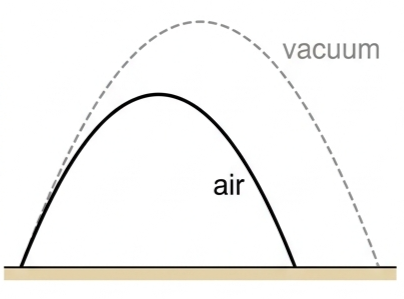
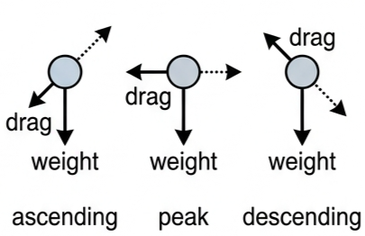
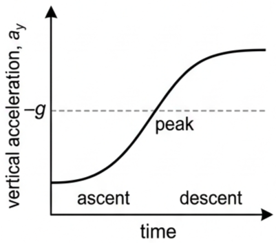
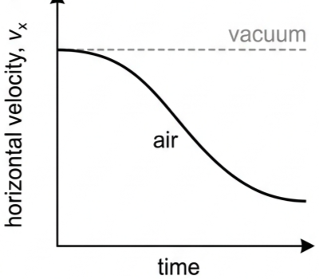
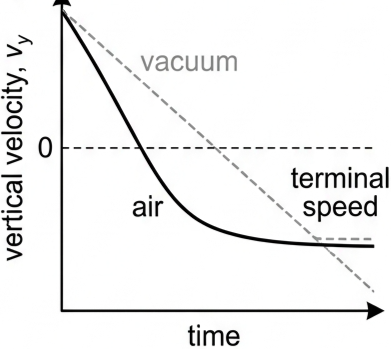
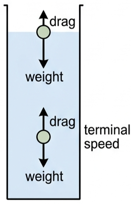

🎯 Hook – same launch, different world
Imagine a projectile launched from ground level with the same initial speed and angle in two situations: Case A, in a vacuum, and Case B, in normal air. Without doing any calculation, sketch what you think the two trajectories look like on the same axes, then decide which one lands first, which travels farther, and which reaches the greater height.

📉 Recap: ideal projectile motion
In the absence of air resistance, a projectile experiences only one force: weight. Its acceleration is constant throughout the flight:
Horizontal velocity stays constant; vertical velocity changes at a constant rate. The result is a symmetric parabola — time up equals time down, and the standard constant-acceleration kinematic equations apply throughout. The question for this lesson is what changes once the projectile moves through air.
💨 Introducing fluid resistance
A projectile moving through air (or any fluid) experiences a drag force, or fluid resistance, with three defining features: it always acts opposite to the velocity of the projectile, it increases with speed, and it depends on the size, shape of the projectile and the density/viscosity of the fluid.

⚙️ Effect on velocity and acceleration
Horizontal motion. In a vacuum the horizontal velocity is constant. In air, drag has a horizontal component that always opposes \(v_x\), so the horizontal velocity decreases continuously throughout the flight — it may become very small if the flight lasts long enough.
Vertical motion — ascent. Moving upward, the vertical component of drag points downward, adding to weight:
The magnitude of the vertical acceleration is greater than \(g\): the projectile slows faster than it would in a vacuum, so time to peak and maximum height are both reduced.
At the peak. Vertical velocity is zero, so vertical drag is zero and \(a_y = -g\) exactly. But if horizontal velocity is still nonzero, horizontal drag still acts — so the net acceleration vector is not purely vertical at the top.
Vertical motion — descent. Moving downward, the vertical component of drag points upward, opposing weight:
The magnitude of the vertical acceleration is now less than \(g\). If the fall lasts long enough, upward drag grows to equal weight (\(F_{drag} = mg\)); net force and acceleration become zero, and the object falls at a constant terminal speed.

✅ Pause and check
📊 Reading the velocity and acceleration graphs
| Graph | Axes | Shape | What to read |
|---|---|---|---|
| Horizontal velocity vs time | time, \(v_x\) | Ideal: flat line. Real: curve decaying from the launch value toward zero, never negative. | Drag continuously slows the horizontal motion — it never reverses it. |
| Vertical velocity vs time | time, \(v_y\) | Ideal: straight line, constant negative slope. Real: steeper negative slope on the way up, crosses zero earlier, then a gentler curve approaching a negative terminal value. | The changing slope is the changing vertical acceleration; the flattening tail is terminal speed. |
| Vertical acceleration vs time | time, \(a_y\) | Ideal: flat line at \(-g\). Real: below \(-g\) during ascent, exactly \(-g\) at the peak, above \(-g\) during descent, flattening toward zero. | Confirms acceleration is non-uniform — the reason SUVAT cannot be used. |


✍️ Worked example A1.5 — a feather and a coin, dropped together

🏃 Real-world application — sport and skydiving
Javelins, shots and shuttlecocks are all shaped to control how drag affects their flight — a javelin is streamlined to minimise drag and keep its trajectory close to the ideal parabola, while a shuttlecock is deliberately shaped to maximise drag and decelerate sharply. A skydiver in free fall is the clearest terminal-speed example: weight is constant, drag grows with speed until it equals weight, and the skydiver then falls at a constant speed until the parachute changes their area and drag coefficient.
🔬 HL extension — how strongly does drag depend on speed?
The drag equation \(F_d = \tfrac12 C_d \rho A v^2\) shows drag is proportional to \(v^2\), not \(v\). This is why drag becomes so significant at high speed even though it may be negligible near the top of a trajectory, where speed is lowest.
⚠️ Trap corner – common mistakes
| Misconception | Correct view |
|---|---|
| "The projectile's acceleration is zero at the top." | The vertical acceleration is still \(g\) downward at the peak. There may also be a horizontal drag force if horizontal velocity is still nonzero, but vertical acceleration is not zero. |
| "Air resistance always reduces the time of fall." | Air resistance reduces the total time of flight, but the falling part alone usually takes longer than the rising part, because vertical acceleration is smaller than \(g\) on the way down. |
| "A lighter object always experiences more drag." | Drag depends on speed, area and shape, not on weight directly. A coin has less drag than a feather at the same speed, but reaches a far higher terminal speed because its weight is much greater. |
1. Drag force always acts to the projectile's velocity.
2. In air, the horizontal component of velocity continuously throughout the flight.
3. Terminal speed is reached when the drag force becomes equal to the projectile's .
4. Compared with the ideal symmetric parabola, the trajectory in air is , with a steeper descent than ascent.
(a) Sketch the two trajectories on the same axes, labelling each. [2 marks]
(b) Explain why the range in air is smaller than the range in vacuum. [2 marks]
(c) At the highest point of the ball's motion in air, draw and label the forces acting on it. [2 marks]
(d) During the descent the ball reaches terminal speed. Describe the forces acting and state the ball's acceleration. [2 marks]
✓ (b) Horizontal velocity continuously decreases due to drag, and the total time of flight is shorter (lower maximum height), so the ball covers less horizontal distance before landing.
✓ (c) Weight vector straight down; drag vector horizontal, opposing the (purely horizontal) velocity at the peak.
✓ (d) Drag (upward) equals weight (downward); net force is zero; acceleration is zero — the ball falls at constant speed.
✓ As speed increases, drag (upward) increases, so the net downward force decreases and acceleration decreases below \(g\).
✓ Velocity keeps increasing, but at a decreasing rate, as acceleration falls.
✓ Eventually drag equals weight; net force and acceleration become zero, and the skydiver falls at a constant terminal speed.
✓ The vertical acceleration is therefore less than \(g\) in magnitude, not equal to it.
✓ As speed increases, drag increases further, so acceleration continues to fall — approaching zero if terminal speed is reached — rather than staying constant at \(g\).